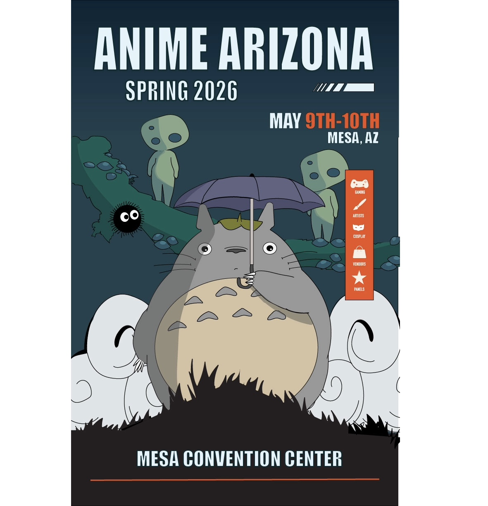
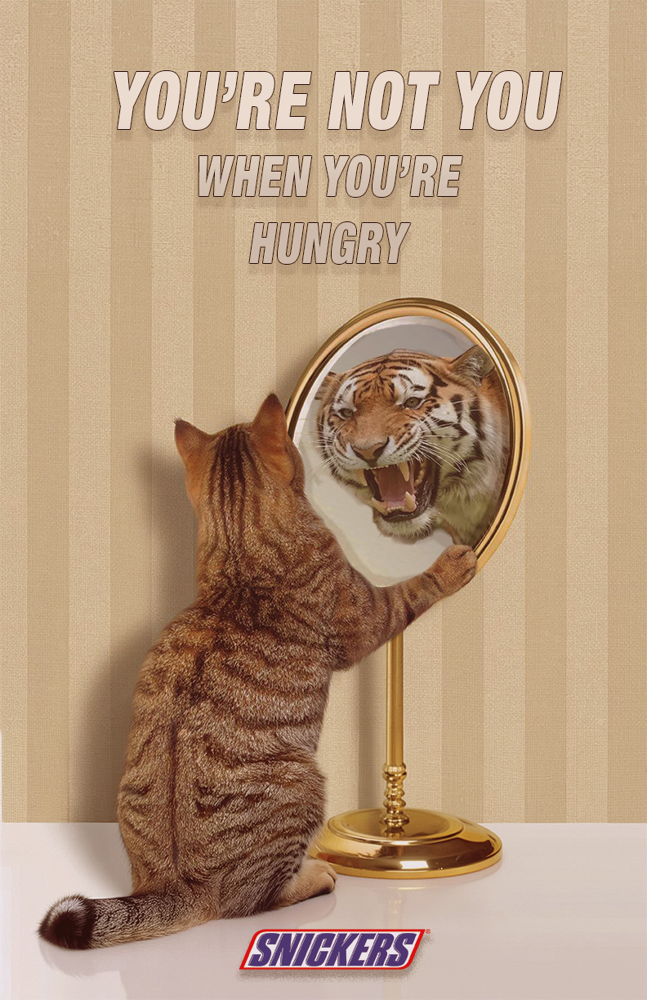

Portfolio Website
This portfolio website showcases my ability to build a multi-page website using HTML and CSS. I used GitHub Desktop to make commits, organize my files, and publish updates. This project focuses on clean structure, navigation, responsive layout, and visual design.
Anime Event Expo Poster
I created an anime expo event poster using Adobe Illustrator. This project highlights my ability to work with vector graphics, typography, color, layout, and illustration techniques to create a polished event design.

Snickers Photoshop Advertisement
I created a Snickers advertisement using Adobe Photoshop inspired by the “You’re not you when you’re hungry” campaign. This project uses layer masks, typography, adjustment layers, and image editing to communicate a clever visual message.

Healthy Meals Website
I created a one-page website about healthy meals for a low-calorie diet using HTML and CSS. This project uses images, flex layout, and organized content to present meal ideas in a clean and easy-to-read format.